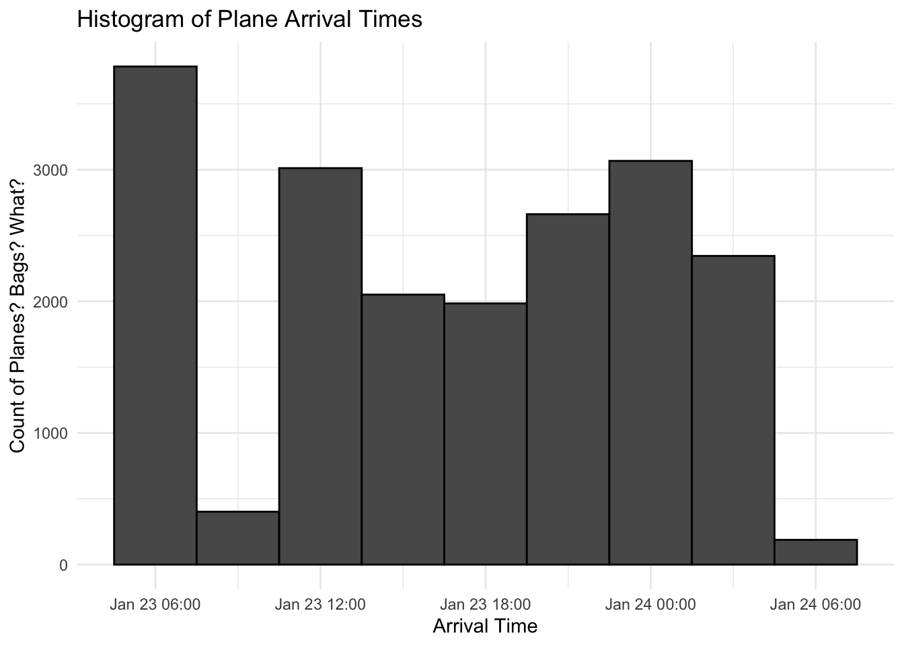
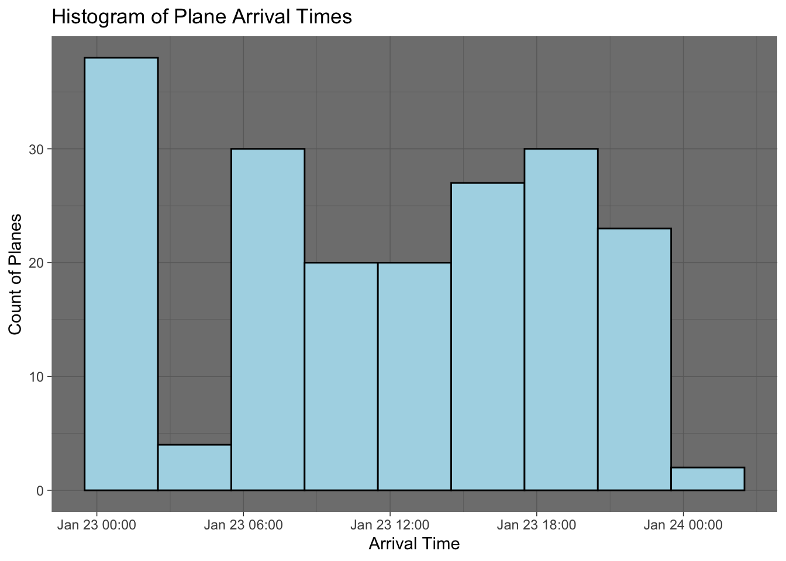
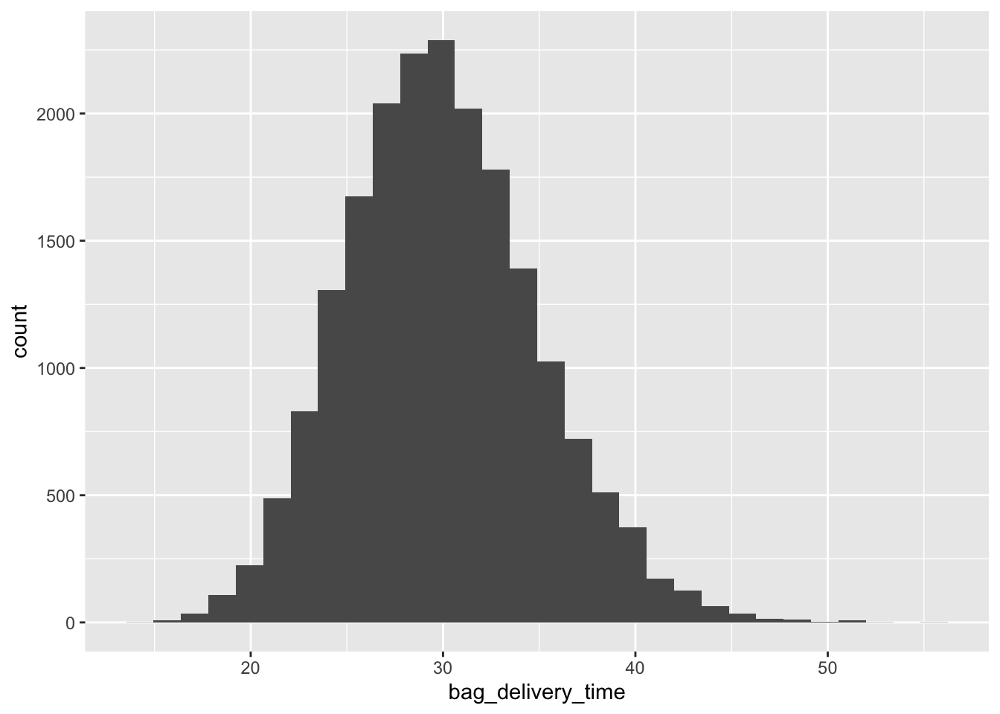
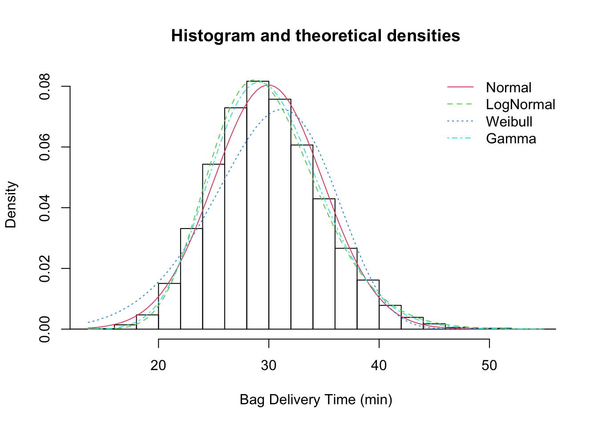
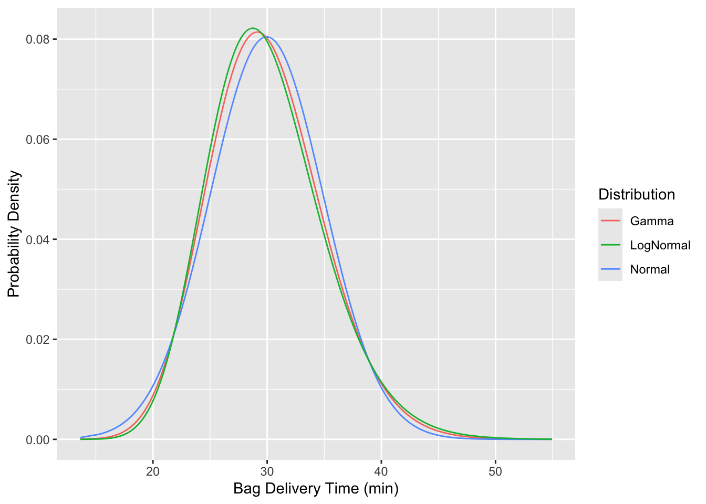
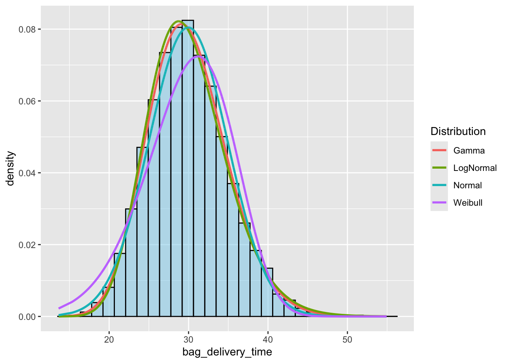

Code
install.packages("tidyverse")
install.packages("knitr")
install.packages("fitdistrplus")
library(tidyverse)
library(knitr)
library(fitdistrplus)14:540:384: Simulation Models in IE (Spring 2025)
fictional
Newark Liberty International Airport is replacing Terminal B as part of their redevelopment plan. Daifuku has been selected to design the baggage handling system around which the terminal will be built. They have used their proprietary software, Sym3 to demonstrate that they meet the Port Authority’s specification documents for 60% Schematic Design.
Does the data indicate that bags will be delivered within 30 min +/- 5 min?

install.packages("tidyverse")
install.packages("knitr")
install.packages("fitdistrplus")
library(tidyverse)
library(knitr)
library(fitdistrplus)Airline Arrival data Bureau of Transportation Statistics
Simulated Baggage data: https://tinyurl.com/sim-bag-data
# Options:
# data <- read_csv("path/to/where/you/downloaded/it")
# navigate to the file in your file explorer pane. Click on the file and "import dataset"
data <- read_csv("https://tinyurl.com/sim-bag-data")
head(data)# A tibble: 6 × 5
`Flight Number` `Tail Number` `Origin Airport` Arrival
<chr> <chr> <chr> <dttm>
1 0208 N804UA ATL 2024-01-23 22:47:00
2 0208 N804UA ATL 2024-01-23 22:47:00
3 0208 N804UA ATL 2024-01-23 22:47:00
4 0208 N804UA ATL 2024-01-23 22:47:00
5 0208 N804UA ATL 2024-01-23 22:47:00
6 0208 N804UA ATL 2024-01-23 22:47:00
# ℹ 1 more variable: bag_completion_time <dttm>data |> ggplot(aes(x = Arrival)) +
geom_histogram(binwidth=60*60*3, color = "black") +
labs(
title = "Histogram of Plane Arrival Times",
x = "Arrival Time",
y = "Count of Planes? Bags? What?"
) +
theme_minimal()
# set timezones so the datetime will DISPLAY correctly
data <- data |> mutate(
Arrival = as.POSIXct(Arrival, tz = "EST")) |>
mutate(
bag_completion_time = as.POSIXct(bag_completion_time,
tz = "EST"))
kable(head(data))| Flight Number | Tail Number | Origin Airport | Arrival | bag_completion_time |
|---|---|---|---|---|
| 0208 | N804UA | ATL | 2024-01-23 17:47:00 | 2024-01-23 18:12:48 |
| 0208 | N804UA | ATL | 2024-01-23 17:47:00 | 2024-01-23 18:19:04 |
| 0208 | N804UA | ATL | 2024-01-23 17:47:00 | 2024-01-23 18:10:56 |
| 0208 | N804UA | ATL | 2024-01-23 17:47:00 | 2024-01-23 18:15:42 |
| 0208 | N804UA | ATL | 2024-01-23 17:47:00 | 2024-01-23 18:09:44 |
| 0208 | N804UA | ATL | 2024-01-23 17:47:00 | 2024-01-23 18:10:13 |
flight_arrivals <- data |>
distinct(`Flight Number`, Arrival)
ggplot(flight_arrivals, aes(x = Arrival)) +
geom_histogram(binwidth=60*60*3, fill = "lightblue", color = "black") + # Binwidth = 1 hour (3600 seconds)
labs(
title = "Histogram of Plane Arrival Times",
x = "Arrival Time",
y = "Count of Planes"
) +
theme_dark()
x_bar <- mean(data$bag_delivery_time)
s <- sd(data$bag_delivery_time)Does this meet specifications
summary(data) Flight Number Tail Number Origin Airport
Length:19495 Length:19495 Length:19495
Class :character Class :character Class :character
Mode :character Mode :character Mode :character
Arrival bag_completion_time
Min. :2024-01-23 00:00:00.00 Min. :2024-01-23 00:16:37.00
1st Qu.:2024-01-23 06:53:00.00 1st Qu.:2024-01-23 07:21:11.00
Median :2024-01-23 12:14:00.00 Median :2024-01-23 12:52:01.00
Mean :2024-01-23 11:39:42.83 Mean :2024-01-23 12:09:40.24
3rd Qu.:2024-01-23 18:22:00.00 3rd Qu.:2024-01-23 18:51:19.50
Max. :2024-01-23 23:47:00.00 Max. :2024-01-24 00:31:43.00 data <- data |> mutate(bag_delivery_time = as.numeric(bag_completion_time - Arrival))
data |> ggplot(aes(x = bag_delivery_time)) +
geom_histogram()
fitdistrplus to fit various distributionsf_norm <- fitdist(data$bag_delivery_time, "norm")
f_ln <- fitdist(data$bag_delivery_time, "lnorm")
f_weibull <- fitdist(data$bag_delivery_time, "weibull")
f_gamma <- fitdist(data$bag_delivery_time, "gamma")
plot.legend <- c("Normal", "LogNormal", "Weibull", "Gamma")denscomp(
list(f_norm, f_ln, f_weibull, f_gamma),
xlab = "Bag Delivery Time (min)",
legendtext = plot.legend)
data <- data |> mutate(
Weibull = dweibull(bag_delivery_time,
shape = f_weibull$estimate["shape"],
scale = f_weibull$estimate["scale"]),
Normal = dnorm(bag_delivery_time,
mean = f_norm$estimate["mean"],
sd = f_norm$estimate["sd"]),
Gamma = dgamma(bag_delivery_time,
shape = f_gamma$estimate["shape"],
rate = f_gamma$estimate["rate"]),
LogNormal = dlnorm(bag_delivery_time,
meanlog = f_ln$estimate["meanlog"],
sdlog = f_ln$estimate["sdlog"]),
)data |> ggplot(aes(x = bag_delivery_time)) +
geom_line(aes(y = Gamma, color="Gamma", line="grey")) +
geom_line(aes(y = Normal, color="Normal")) +
geom_line(aes(y = LogNormal, color="LogNormal")) +
labs(
color = "Distribution",
x = "Bag Delivery Time (min)",
y = "Probability Density"
)
tidy data from “wide” to “long” formlong_data <- data |> pivot_longer(
cols = c(Gamma, LogNormal, Normal, Weibull),
names_to = "Distribution",
values_to = "Probability")kable to output a formatted table.kable(head(long_data))| Flight Number | Tail Number | Origin Airport | Arrival | bag_completion_time | bag_delivery_time | Distribution | Probability |
|---|---|---|---|---|---|---|---|
| 0208 | N804UA | ATL | 2024-01-23 17:47:00 | 2024-01-23 18:12:48 | 25.80000 | Gamma | 0.0632560 |
| 0208 | N804UA | ATL | 2024-01-23 17:47:00 | 2024-01-23 18:12:48 | 25.80000 | LogNormal | 0.0666378 |
| 0208 | N804UA | ATL | 2024-01-23 17:47:00 | 2024-01-23 18:12:48 | 25.80000 | Normal | 0.0566180 |
| 0208 | N804UA | ATL | 2024-01-23 17:47:00 | 2024-01-23 18:12:48 | 25.80000 | Weibull | 0.0480593 |
| 0208 | N804UA | ATL | 2024-01-23 17:47:00 | 2024-01-23 18:19:04 | 32.06667 | Gamma | 0.0687913 |
| 0208 | N804UA | ATL | 2024-01-23 17:47:00 | 2024-01-23 18:19:04 | 32.06667 | LogNormal | 0.0661965 |
ggplot() +
# Histogram or density plot of `bag_delivery_time`
geom_histogram(data = data, aes(x = bag_delivery_time, y = ..density..),
bins = 30, color="black", fill = "skyblue", alpha = 0.5) +
# Overlay probability density lines from `long_data`
geom_line(data = long_data, aes(x = bag_delivery_time, y = Probability, color = Distribution), size=1)
Which distribution is the best fit?
How do you know?
Does the schematic design meet specifications?
#| echo: true
fitted_distributins <- list(f_gamma, f_ln, f_norm, f_weibull)
# Extract summary metrics from the fitted distributions
summary_table <- sapply(fitted_distributins, function(fit) {
c(
"Number of Parameters" = as.integer(length(fit$estimate)), # Number of parameters
"Log-Likelihood" = fit$loglik, # Log-likelihood
"AIC" = fit$aic, # Akaike Information Criterion
"BIC" = fit$bic # Bayesian Information Criterion
)
})
# Convert to a data frame for readability
# summary_table <- as.data.frame(summary_table)
# Assign column names based on your distributions
colnames(summary_table) <- c("Gamma", "Log-Normal", "Normal", "Weibull") # Adjust based on distribution names
# View the table
kable(summary_table)| Gamma | Log-Normal | Normal | Weibull | |
|---|---|---|---|---|
| Number of Parameters | 2.00 | 2.00 | 2.00 | 2.0 |
| Log-Likelihood | -58690.38 | -58732.54 | -58877.11 | -59819.8 |
| AIC | 117384.75 | 117469.09 | 117758.23 | 119643.6 |
| BIC | 117400.51 | 117484.84 | 117773.98 | 119659.3 |